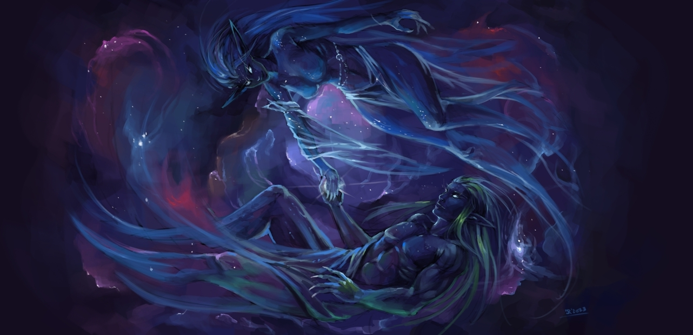

CREATION'S TIMELINE
---- Once again, this is a work in progress, things might change.----
PRIOR TO CREATION - ASTRALITY
- At the birth of time, The Twin Divines, Yshae and Sylhael wake and sing, creating an existence of purity and harmony within an eternal emptiness.
- As the Twin Divines grow the Great Song, its essence shapes into being creatures of great power, the Grand Astrals, each with their own voice and aspect to add to the song. The first two created are a gentle lullaby; Anaeila, the voice of tears and a great harmony; Kerethar, the voice of growth. Content, the Twin Divines care for and teach their newfound son and daughter, passing upon them their ways.
- Still yet the Twin Divines find aspects to their song and the next two Grand Astrals created are a mighty chorus; Atronach, the voice of power and an inspiring melody; Tilvaer, the voice of dreams. Quite different from their older siblings, both of these sons are independent and grow upon their own paths.
- Finally, the Twin Divines figure out the aspects missing to their song and the last two Grand Astrals are created. The first, a beautiful hymn; Arenya, the voice of hope, and the second a solumn pause; Ulgath, the voice of silence.
- As the Six harmonize and sing together, the Grand Astrals realize that they too can create using the Great Song. After careful consideration and debate, and the Twin Divine's blessings, the Astrals are therefore born, many more than Six and each a lesser voice, but nevertheless part of the whole.
- As more Astrals join the chorus, it grows and grows in strength, but also losing some of its harmony. In time, the far reaching echo creates the first discordant sound, birthing its opposite which mimics the song as a screech, an undescribable creature who only ever wishes to remove existence and silence the song. It, in turn, births discordant creatures, the Nameless.
- So begins the first conflict, the Astral War, as the Nameless attempt to destroy any related to the song of creation.
- In its continued mockery, the unnamed creature splits itself and its creations into three aspects, a voiceless mouth, a sightless eye and a mindless rage.
- As the conflict contiunes, and much to their own horror, some of the Astrals are corrupted and turn upon their creators, turning the tide against the Twin Divines.
- In a move of desperation, the Twin Divines force their song into becoming a material thing, quieting it and hiding it from the Nameless. Thus is created Y'syl, the realm of creation.
- While most of the Nameless dissipate from this act, many still seek the origination of these echoes of the Great Song, and they still hold sway over many Astrals who are unknowingly corrupted.
~0~

~50,000,000~
~85,000,000~
~125,000,000~
~275,000,000~
~315,000,000~
~450,000,000~
~700,000,000~
~1,125,000,000~
FIRST AGE - DISHARMONY
- The Twin Divines find themselves exhausted, but happy with Y'syl, for it bears a new aspect to the Great Song, life itself. They bring the Six to aid them in creating life upon this new physical realm of creation, to keep things protected and in balance.
- With the aid of the Six, the first four beings of matter and physical substance are created. Four elemental gods, each with a portion of the material plane to govern and watch. Yshae, with the aid of Kerethar, Anaeila and Arenya creates the watchers of Air, Sel'tya, and Water, Yul'tae. Sylhael, with the aid of Atronach, Ulgath and Tilvaer, creates the watchers of Fire, Feo'rag and Earth, Gor'kan.
- Content, the Twin Divines and the Six leave the realm be and return to the eternal war, to continue protecting their creation from the darkening void.
- However, their voyage is betrayed and seen by fallen Astrals and the nameless quickly strike at the realm of creation.
- The elementals, working together and creating armies of their own, repel the invasion and erect a powerful barrier around the entire realm. This takes too long however, and the elemental watchers feel the corruption of the void upon their actions and the plantings of the seeds of greed.
- It takes little time for the elementals to turn upon each other, wanting the realm of creation for themselves alone.
- The World Shattering conflict occurs as the elements clash for supremacy over the material plane, creating oceans and continents.
- The Twin Divines return to find Y'syl shattered and at war. They reluctantly step in, creating mortal forms of themselves that can reside within and influence the realm faster than the song would allow and banish the Elemental watchers into their own smaller realms, removing their direct actions upon the realm of creation.
- As the lands settle from the elemental cataclysms, the Twin Divines ask the eldest the Six, Anaeila and Kerethar, to also shed their Astral forms and to walk and watch over the realm for the coming new-born life. Anaeila and Kerethar create mighty beings to aid them in guiding the realm; Arenya through her astral animal spirits and Kerethar through living matter with ancient and mighty tree-beings.
- Atronach, the warrior and most powerful of the Six alongside Kerethar, feels saddened by the Twin Divines' refusal to choose him as one of the great helpers. His discordant emotions drive him to come down in full power without the aid of the Twin Divines, shedding his Astral form. He creates age immortal creatures from his own flesh and mind, calling them daemons.
- The Daemonic Council settles, forming five great houses to honour different aspects of life. Valor, Patience, Harmony, Beauty and Generosity.
- The Twin Divines, though concerned by his choice, are not one to destroy. They accept his decision and aid him in shaping a part of the world from himself and his creations. They also ask the other three Great Astrals in creating guiding creatures.
- Arenya creates the Angelic Host, and their leaders, the six archangels. Ulgath creates reapers of dread robe and silent voice, and Tilvaer creates ever more complex creatures of unliving matter and mechanical marvel.
- In time, many other of the lesser Astrals choose and ask to help shape the mortal song and bring in servants of their own.
- The first mortal creatures begin shaping under the Twin Divines' song as the world stabilizes. The first dragons as well as the ancestors of hydras, drakes, even the early humanoids.
~0~
~250~
~6,000~
~11,000~
~32,000~
~145,000~
~215,000~
~300,000~
~500,000~
SECOND AGE - CORRUPTION
- The first crude civilizations appear as time goes by. Many are watched over by Astrals, who are viewed and praised as spirits or gods, others are guided by elemental hand. Humanoid species are especially watched over, their form reminiscent of the Twin Divines' own.
- Among the civilizations, two reach the attention beyond even the Astrals. The first are the insectoid hive-minded Ikkani, far to the south and whose cultural advancements and spired cities are far beyond any other, yet their ruthlessness for survival is caught by shadowed eyes. The other are the Sei'yuulei, the first fae, in the central and northern lands, who discover an attunement to the harmony that shapes the world, and who begin to attempt to add their own voices to its echoes.
- The Twin Divines hear this strange, childlike note in the harmony of their song, and watch the Sei'yuulei from a distance. They are surprised to find that the Sei'yuulei are indeed feeling the tug of the Great Song. Curious and ecstatic at the species' innate ability, they call upon Anaeila and Kerethar to watch over and teach the Sei'yuulei to use their voices, even if their mortal forms only allow a lesser degree.
- Anaeila becomes known to the Sei'yuulei as the Great Huntress, alongside her astral animals, led by the astral lynxes, while Kerethar becomes known as the Great Defender, alongside his ents and living forests.
- Atronach, also curious, offers his help to his brother and sister and is gladly welcomed.
- The daemonic council ally themselves to the Sei'yuulei and aid in teaching the young race.
- Thanks to the gift of the Twin Divines and guided by the Huntress, the Defender and the Council, the Sei’yuule begin forming a pact with the life coursing throughout the forests and the ancient beasts roaming the wilds.
- While this happens, the Ikkani empire finds a different teacher. They find a tear that had been created by the first war with the nameless. Their high priests are slowly twisted and corrupted by the void beings and begin creating an empire, quickly spreading and devouring lesser races and cultures that stand in theirs and their masters’ path.
- A small part of the Ikkani split from their kind, the Arach widows, mostly due to an inner struggle for power, but also from their disagreement of being controlled by an unknown force. They create their own empire, away from the Ikkani and retain the semi-humanoid shape of their ancestors.
- The conflict known to the Sei'yuulei as the Eternal War begins its first as the Ikkani clash with their first foe of equal might. Working together, the Sei'yuulei and the creatures of nature under their wing hold back their first waves. However, dark ominous whispers guide the hand of the Ikkani, and it takes little time for them to begin conquering and slaughtering settlements.
- The Sei'yuulei turn their full attention to the war, and with the might of the masters of the five halls as well as nature's fury they turn the tide back in their favour and push the Ikkani all the way back to their first cities.
- Driven to the brink of insanity and with little left of their once great empires, the Ikkani priesthood stretch and rip open more of the tear to the void, finally allowing Nameless upon the realm of creation.
- The Nameless take on forms that defy natural laws, and with powers of incredible destruction. They also bring a new weapon to the realm of creation, necromancy, capable of raising those fallen into new servitude, teaching this to the Ikkani Priesthood.
- The appearance of the nameless and the powers of necromancy changes the aspect of the war, and the allied forces are swiftly pushed back.
- Many of the early civilizations are wiped out as the Ikkani spread, each giving just enough time for the Sei'yuulei to regroup and prepare for the next wave of death.
- In response, Yshae and Sylhael create great landmasses to the west, giving room to the few remaining civilizations to flee. They shield this land from shadowed eyes, losing much of their power in the process.
- Among these are the favourite races of Arenya and Ulgath, including Humankind, the Falgrii, the Runnoc and Aelvenkind. The last of these, proudest and greatest, form their empire at the edge of the West, agreeing to hold off the Ikkani forces that split from the main assault upon the Sei'yuulei, and as such are gifted long-life and power by Arenya.
- Although they are still behind the walls of their own realms, the elemental watchers still bore a hatred for the enemy that had corrupted them, and the elements of water, earth and air offer their aid, along with the lesser creatures that worship them.
- A great, but extremely uneasy, ancient alliance is created between the Sei'yuulei, the Daemonic Council, the great beasts of nature, the early empires of the Aelvenkin and Arachs, and the three elemental powers alongside the uncivilized tribes and creatures that worship them, such as Lillends, Couatles, Harpies, Sirens, Grolnar and more.
- The three remaining Great Astrals also aid this alliance, although not part of the realm, by sending in their most powerful personal servants.
- Angered that what should've been a victory is taking so long, The Nameless slowly start exanding the tear to the void and calling one of the three parts of the Void, Z’rass’i’in, the Mind of Insanity, into the realm to break the Twin Divines.
- From the tear comes frist an avatar of Z'rass'i'in. A mere part of it enough to cause the lands surrounding its very presence to wither away.
- This forces Atronach himself, who had been careful to not use his powers, to come to action. In a cataclysmic battle which creates a crater that would be known later as the Sea of Mists, Atronach defeats it, although not without consequence. The shadow succeeds in planting a touch of insanity into the former Grand Astral’s mind.
- The war continues, the forces of the Ikkani once again pushed back due in large part to Atronach and the daemons who serve him. For they get ever more deadly, underhanded and bloodthirsty with each passing battle.
- Unfortunately, on the brink of victory, Atronach’s mind falls completely to Z’rass’i’in’s corruption and turns his hosts against its once allies as well as the Ikkani, his intent on destroying everything to finally attain silence and a peace of mind.
- The Daemonic Council is now a warped and corrupted image of what it used to be. Honour becomes Pride, Patience loses its way to Sorrow, Harmony falls to Wrath, Beauty transforms to Lust and Generosity takes everything back, becoming Greed.
- Some of the Daemonic Council refuse to follow and are almost all slaughtered, the last few finding refuge within the realms of the Sei’yuule, aiding and struggling to resist the call of destruction.
- Yshae and Sylhael finish their warding of the western lands as the tides turn for the worst, and sadly lock their once great warrior away into a prison realm alongside his Daemonic Council. This realm is beautiful and plentiful for their kind, but is quickly corrupted by a deranged Atronach as it becomes a place of hellfire, torture and suffering.
- While the betrayal and loss of Atronach’s daemons forces the Sei’yuule’s armies to split their attention, the Ikkani are able to last long enough to successfully summon Z’rass’i’in to the realm.
- Z’rass’i’in appears and the realm trembles and falls to shadow and the battle between it and the Astrals changes the face of the realm. The retaliation of the Ikkani's new ruler easily stretches out to most corners of the realm.
- The land is covered in darkness, the Sei'yuulei and their allies pushed out of the midlands and their homelands. Mortal species and races band together to fight back against darkness, but with little hope as the realm begins to crumble apart. Luckily, most mortal species in hiding are ignored as Z'rass'i'in focuses everything upon the favourite race of the Twin Divines. The astrals' creations do their best to keep and guard the hiding mortals, while the fae, elemental and natural forces alongside remaining kind daemons focus on slowing the advances of the Ikkani and shadows.
- At the very last city of the Sei’yuule in the far north there is one final effort to fend off Z’rass’i’in’s cult and its armies long enough for Yshae and Silhael to sacrifice most of their wordly forms' power, locking the creature away into a prison at the very bottom of Y’syl.
- The Twin Divines are forced to hide and rest apart from one another to hide from the remaining cults, leaving the fate to the mortal races and astral warriors. They gift Kerethar and Anaeila with one last power, a mighty seed, that should grow a tree that grants protection to a large area of choosing.
- Yshae goes back to rest in the Sei’yuule lands under the guise of a moon-lit doe and Sylhael in a part of the midlands as a long golden serpentine dragon. He wanders for a few centuries alongside chosen uncorrupted astral beings who aided him in the war into the realm of creation before disappearing, teaching them to guard the balance of all things. This land becomes Jian, and its creatures are touched with Sylhael’s divine power, allowing them to sense life itself, which is later named Qi by its inhabitants.
- To heal and ward the last remnants of life, the gift of the Twin Divines is planted at the heart of the remaining Sei’yuule civilization, far from their once great cities of the middle lands.
- The last of the war rages on for millennia, but in the end the nameless are driven from the realm of creation and the Ikkani are banished to the far corner of the realm, their few remaining cities buried and kept in stasis under a powerful spell, sealing the rift caused tens of thousands of years ago.
~0~
~3,000~
~6,500~
~9,000~
~10,800~
~12,200~
~13,700~
~15,000~
~15,700~
~17,000~
~18,500~
~20,000~
~22,500~
~28,000~
THIRD AGE - MORTALITY (~210,000 Years before the Fifth Age)
- The cost of the war has been great and the Sei’yuule number a few hundred, their great cities and lands destroyed, devoid of life except for the sanctuary lands near the great tree in the far north. Most knowledge of the past is gone and the few who remain that remember the previous age seal any knowledge as for it to never happen again. Almost all is forgotten, except through tales and whispers.
- The Sei’yuule pledge to defend the last preserves of song-life, living in the far northern forests beyond the seas and icy flows and keep a watchful eye on Y’saurui, the Great Tree, as well as the prison of the great shadow while preserving what knowledge is left of their ancient ways.
- The land where the clash between the astral warriors and Z’rass’i’in happened becomes a barren land incapable of growing life. Its rocky spires of ash and dust that lead to Z’rass’i’in’s prison become known as the Blackened Spires, and separates the sei’yuule forests from the rest of the realm.
- The remnants of the war torn lands south of the Blackened Spires slowly regain life as races that had hid or fled retake their lands. These destroyed and forgotten lands, alongside the western lands are simply called the Midlands. (Later named Avorkarth by the Aelvenkin.)
- Anaeila and Kerethar call upon two of the other powerful Astral Warriors to aid these lands in their stead, as they keep regrowing the destruction that occured. Arenya agrees to watch over the grace of the light and Ulgath, the permanence of death. They gift these watchers the midlands, and all agree to keep the Sei’yuulei’s lands and the imprisoned one beyond the frozen wastes secret.
- Arenya, true to her word and power of light, swears to keep an eye out for corruption from the lingering shadows.
- Ulgath in turn simply wanders, keeping the dead as they are and hunting any signs of necromancy but otherwise staying his hands away from the mortal ways.
- Many of the other Astrals who helped shape early civilizations remain as well, some still pure, some secretly corrupted. Though they are bound by the Twin Divines to keep the past a secret, some let slip some dark tales and stories. They are also still considered Gods by the simple mortals and become worshipped, creating a myriad of cultures.
- Mortals, being so easily swayed, also follow some ancient beings or creatures from the first age such as dragons or colossi, creating an even greater myriad of cultures.
- What is known as the first age of records happens, and the wars that blacken and ravage the land are fierce and many as corrupted Astrals lead their chosen mortals in conquests against one another...
~0~
FOURTH AGE - SILENCE (~68,000 Years before the Fifth Age)
- The ages of the Aelvenkin empires and the Runnoc, alongside the the start of humanity's first great kings. Barbarism is commonplace amongst all races as they vie for their place in the realm.
- The Aelvenkin empire falls upon itself due to the rise of Ashna, the Sun King and the discovery of blood magic. The Sanguinnar have a short but mighty rule before crumbling due to infighting.
- Humanity takes the opportunity of the fall to start spreading.
- Daemonic invasion happens sometime in the later years of the age, leading to the disappearance of Arenya. Eonna takes over the angelic council in temporary position.
FIFTH AGE - HOPE - THE CURRENT AGE - (~3,500 years before and including the Tale of the Fifth Age)
- Humanity has mostly wiped out everything in the midlands and have cemented their place. Most wars are now in between humans.
- Most of the non-human creatures are now considered mythological, bound to eastern borders or rare occurances.